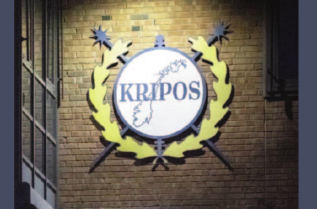

Fredag · 14:30–15:00
Siste trender fra Kripos
Sten Kjeksli og Elisabeth Drange
I dette foredraget presenterer politioverbetjent Sten Kjeksli og senioringeniør Elisabeth Drange fra Kripos de nyeste trendene innen narkotikabeslag og setter utviklingen inn i en bredere kontekst.
Med utgangspunkt i beslagstall og annen tilgjengelig informasjon belyses sentrale trekk ved narkotikamarkedet og hvordan dette henger sammen med utviklingen innen organisert kriminalitet.
Foredraget gir deltakerne oppdatert kunnskap om endringer i marked, aktører og kriminalitetsformer, og viser hvordan ulike informasjonskilder kan bidra til å forstå situasjonen bedre.
Dette er et nyttig foredrag for alle som ønsker et mer oppdatert bilde av utviklingen og utfordringsbildet.
